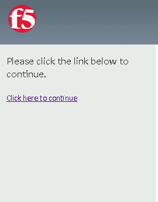
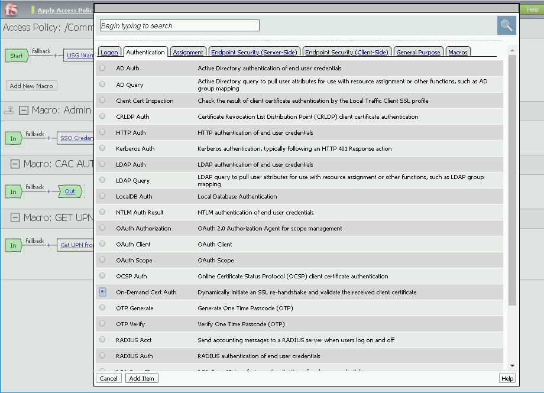
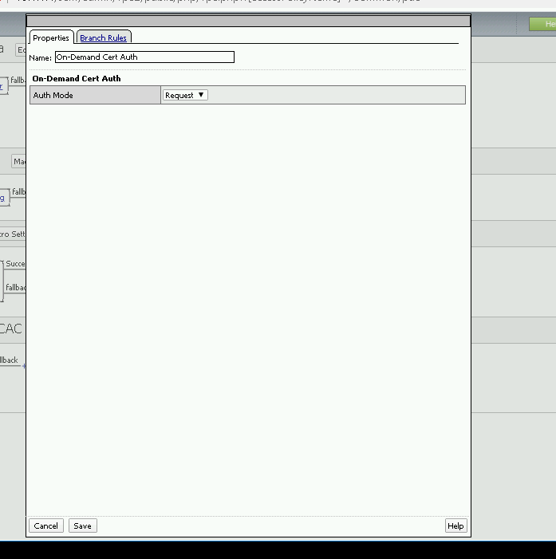
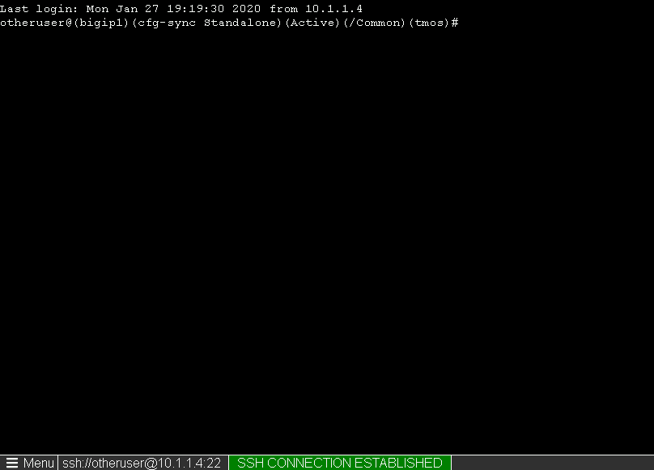
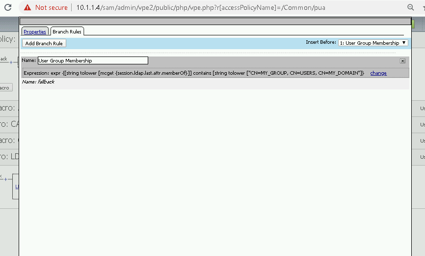
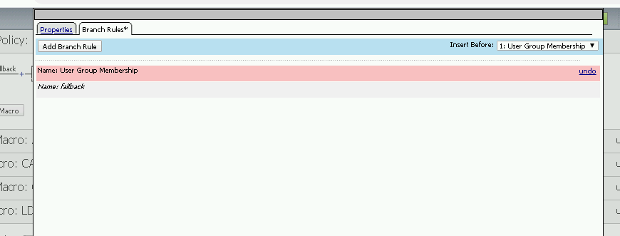
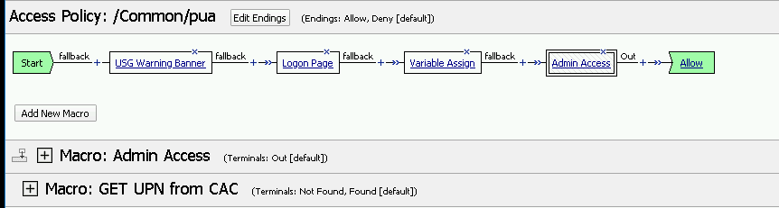
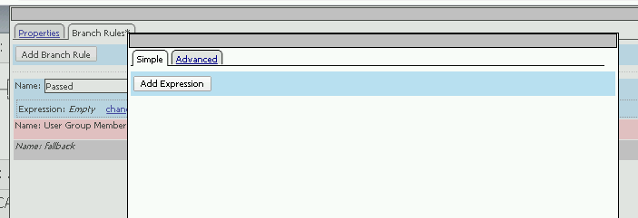
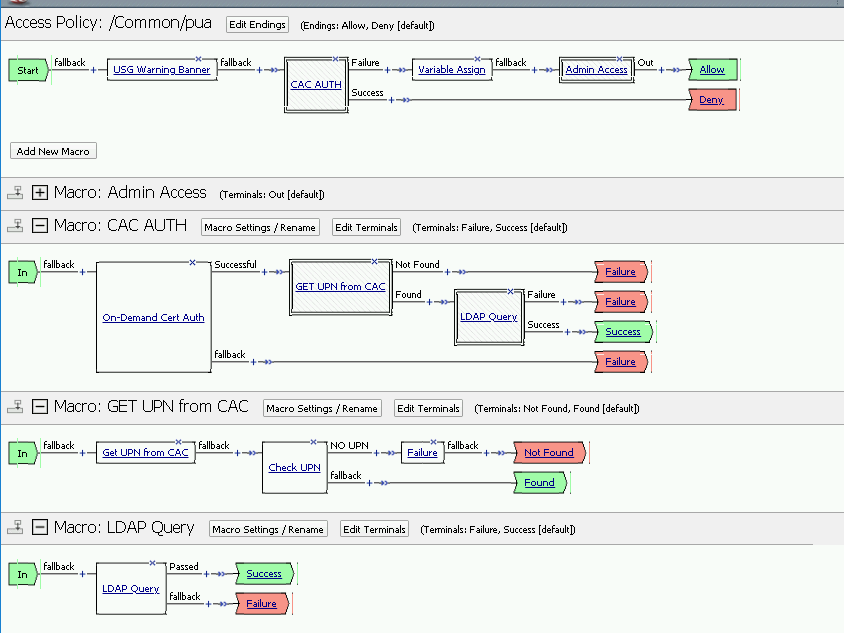
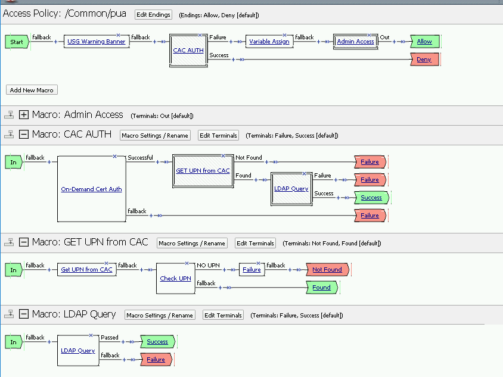

2.2.5. Lab – Creating an APM Policy¶
2.2.5.1. Task – Review the APM Policy Created by the PUA Build Script¶

2.2.5.2. Task – Add Ondemand Certifcate Authentication¶
- Create a macro called CAC AUTH

Add On-demand Cert Auth to the new macro. Leave the Auth Mode to Request.


Add the GET UPN from CAC to the macro

Update the terminal to show Success and Failure


2.2.5.3. Task – Create an LDAP macro¶
Create a macro called LDAP Query

Add the LDAP Query operator to the macro

Select the predefined LDAP Server f5lab, and input the SearchDN and SearchFilter. Select Fetch groups Direct

SearchDN = DC=f5lab,DC=local SearchFilter = UserPrincipalName=%{session.custom.ephemeral.upn}
Delete User Group Membership branch
 
Add a new Branch called Passed which check if the LDAP query Passed
 


Update the terminals for the LDAP query by clicking edit terminals


Add the LDAP Query Marco to the CAC AUTH macro by clicking the plus sign be side the GET UPN from CAC macro

2.2.5.4. Task – Update the default start Branch¶
Remove the logon Page by clicking the X above the Logon Page


Add the CAC AUTH macro between the Warning Banner and Variable Assign

Change the LDAP Query terminal from Success to Failure by clicking the terminal
 
Update the Variables Assign


Click Apply Access Policy